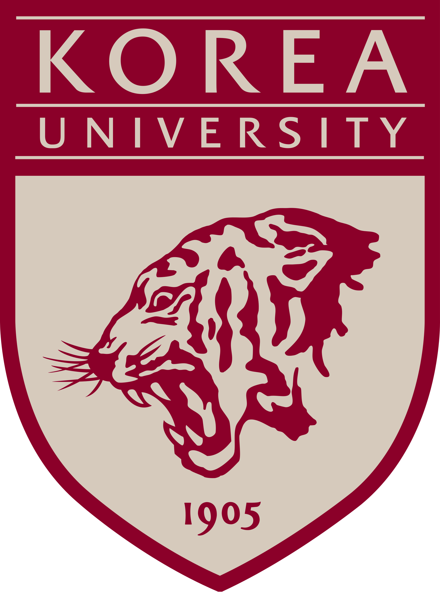

서울대 경제학부
서울대 경제학부

고려대 경영대학 경희대 이과대학
경희대 이과대학
PS:LAB REPORT
홍지민 학생을 위한
퍼스널 입시 분석 보고서
"데이터를 기반으로 설계하고, 입학사정관의 시선으로 완성합니다."
CONSULTING OVERVIEW
안녕하세요, PS:LAB입니다.
보성고를 졸업하고 현재 서울대, 고려대, 한양대 등 명문대에서 공부 중인 선배들이 모인 입시 전략 팀입니다. 우리가 직접 겪고 뚫어낸 강남·송파 입시의 정답을 후배들에게 가장 직관적인 '데이터 리포트'로 전달하며, 합리적인 비용으로 최고의 퀄리티를 보장합니다.
고도화된 AI 환경으로 방대한 입시 데이터를 크로스체크합니다.
당장 실행 가능한 디테일만 제공합니다.
명문대 합격생이 직접 작성하는 고퀄리티 리포트.
체계적인 3단계 리포트 솔루션
정밀 데이터 분석
생기부를 입학사정관의 시선에서 냉정하게 평가하여 보완할 수 있는 핵심 키워드를 도출합니다.
스토리보드 기획
목표 대학 인재상에 완벽히 부합하는 방향성을 설정하고 탐구 및 독서 활동을 설계합니다.
실전 리포팅 & 피드백
실제 학교 활동에 바로 적용할 수 있는 디테일한 가이드 리포트를 제공하며 피드백을 진행합니다.
🎓 학생 프로필
- 이름 홍지민
- 소속 인천신현고등학교 3학년 (일반고)
- 진로 사회학/미디어 지망 사회적 약자 보호 서사
- 내신 2.27등급 2학년 1학기 1.9 반등
- 봉사 47시간 (I-아세안 등) 전공 적합성 우수
🎯 전형별 지원 가이드
👨💼 담당 멘토진
ACADEMIC DATA ANALYSIS
📈 내신 성적 추이
1학년의 부진(2.56)을 딛고 2학년 1학기 1.90등급으로 반등하며 본인의 역량을 증명했으나, 2학년 2학기에서 수학의 약점으로 인해 다시 2.38로 하락했습니다. 3학년 1학기 수학 방어와 사탐 올 1등급으로 확실한 우상향 쐐기를 박아야 합니다.
📊 교과 상세 데이터
| 교과군 | 1-1 | 1-2 | 2-1 | 2-2 | 3학년 목표 |
|---|---|---|---|---|---|
| 국어 (공통/문학/독서) | 2 | 2 | 2 | 2 | 1등급 권 진입 |
| 수학 (공통/수학Ⅰ·Ⅱ) | 3 | 4 | 3 | 4 | 반드시 2등급 방어 |
| 영어 (공통/영어Ⅰ·Ⅱ) | 3 | 2 | 2 | 2 | 안정적 2등급 유지 |
| 역사 (한국사/세계사) | 1 | 1 | 1 | 2 | 1등급 탈환 |
| 일반사회 (통사/정법/윤사) | 1 | 2 | 1 (윤) | 2·2 | 전 과목 1등급 |
STUDENT RECORD EVALUATION
입체적 학업 성취와 분석력
- 내신 역격 서사의 완성 1학년 2.5에서 2학년 1.9로 이어지는 정량적 반등은 단순 성적 향상을 넘어 '학습 동기'와 '자기주도성'을 증명하는 리포트의 핵심 강점입니다.
- 비판적 문해력의 실체화 국어 및 독서 세특에서 확인되는 '뉴스 아카이브' 및 '논설문 분석' 역량은 사회과학도로서 요구되는 텍스트 해석 능력을 최고 수준으로 보여줍니다.
사회과학적 전문 탐구 뎁스(Depth)
- 주제 탐구의 유기적 심화 1학년 '사회적 약자 개괄 탐구'에서 2학년 '탄소 불평등' 및 '데이터 사회학'으로 이어지는 깊이 있는 확장성이 대학의 평가에서 매우 높은 점수를 받을 요인입니다.
- 학급 공동체 변화 주도 학급 부회장 활동 시 단순 직급 수행이 아닌, 조직 내 구체적인 변화와 화합을 이끌어낸 '실천적 리더십'이 생활기록부에 명확히 기술되어 있습니다.
나눔의 가치와 실천적 책임
- 압도적인 봉사 진정성 47시간 이상의 봉사 이력(특히 I-아세안 연계 활동)은 사회적 감수성이 단순히 이론에 머물지 않고 현장으로 이어짐을 증명하며, 특정 상위권 대학 학종 지원 시 강력한 무기가 됩니다.
- 전공 융합적 인성 사회적 소외 계층에 대한 수학적 관심(정보 격차 분석 등)은 진로와 공동체 의식이 융합된 입체적 인재상을 보여줍니다.
📋 생기부 서사 흐름 및 세특 분석
📋 세특 분석 위젯 — 전공 역량 지표 (Benchmark)
TARGET UNIVERSITY ROADMAP
| 분류 | 대학 | 전형 | 평균등급 | 핵심 전략 |
|---|---|---|---|---|
| 상향 | 한양대 사회학과 |
학종(추천형) | 2.1 | [주의] 수능 최저(3합7) 확보 필수. 생기부의 학술적 우수성 및 수학 반등 기록과 전문 탐구의 결합 어필. |
| 소신 | 중앙대 사회학/미디어 |
학종(융합형) | 2.3 | 다양한 활동을 유기적으로 엮는 '브랜딩' 역량 최우선 평가. 지민 학생에게 최적화. |
| 소신 | 경희대 사회학과 |
네오르네상스 | 2.2 | 면접 비중 30%. 사회과학적 소양과 본인만의 가치관을 구체적 언어로 전달이 관건. |
| 적정 | 건국대 미디어커뮤 |
자기추천 | 2.4 | 전공 적합성 40% 반영. 미디어 리터러시 및 실무적 탐구 이력이 합격의 키. |
| 안정 | 단국대 사회과학대 |
학종(DKU인재) | 2.7 | 내신 안정권. 면접에서 본인의 사회적 가치관을 명확히 전달하면 합격 확실. |
| 안정 | 광운대/세종대 | 학종 | 2.8 | 비교과 우위로 안정적 합격 가능 라인. 최저 없는 전형 위주 공략. |
3-1 ACTION PLAN & STRATEGY CALENDAR
📅 3학년 1학기 집중 관리 캘린더
내신 집중 & 탐구 기획
D-DAY- 중간고사 준비: 수학 2등급 진입 목표
- 탐구 주제 확정: ESG/ESV 심화 보고서
- 수행평가: 국어 세특 '비판적 독해' 노출
심화 탐구 & 보고서 완성
진행예정- 탐구 01 완성: ESG 실증 리포트 제출
- 수학 세특: 수리 모델링 프로젝트 시작
- 학교 행사: 사회 문제 토론 대회 참여
기말고사 & 생기부 마감
- 기말고사: 사회/국어 전교권 등수 사수
- 생기부 기록: 담임 선생님과 상담
- 독서: 사회학 거장들의 도서 3권 제출
최종 점검 & 수시 라인업
- 생기부 최종 확인: 오탈자 및 누락 점검
- 자소서(준비): 핵심 서사(Plot) 정리
- 수시 원서: 6학종 라인업 최종 확정
카드를 클릭하면 유준환 멘토 추천 세부 실행 계획을 확인할 수 있습니다.
ESG와 ESV의 차이 분석 및
기업의 사회적 책임 실증 탐구
실제 기업들이 ESG 경영의 대두에 따라 어떤 식으로 행동하고 있는지 분석하고, 그 과정에서 발생하는 문제점과 해결 방안을 사회적 약자 보호 관점에서 제안
세부 계획 보기 →기후 위기와 탄소 중립:
지속 가능한 미래를 위한 정책 설계
1학년 통합사회 탐구를 확장하여, 탄소 중립이 사회 구조적 불평등에 미치는 영향과 환경 정의(Environmental Justice) 실현 방안 탐구
세부 계획 보기 →남들이 하지 않는 심화 이론:
사회 현상의 수리적 모델링
수학 Ⅱ의 미분/적분 개념을 활용하여 사회적 소외 계층의 정보 접근 격차 변화율을 분석하거나, ESG 경영의 효율성을 수치로 증명
세부 계획 보기 →비판적 문해력을 통한
인본주의 저널리즘 완성
『자유론』, 『1984』 등의 고전을 현대 미디어 환경과 연결하여, 사회적 소외 계층을 대변하는 언론인의 윤리적 책임에 대한 에세이 집필
세부 계획 보기 →심화 도서 기반의
사회학적 에세이 집필
『사회학적 상상력』(라이트 밀스), 『부의 기원』 독독 후, 개인의 문제가 어떻게 거시적 사회 구조와 연결되는지 논증
세부 계획 보기 →한양대 3합 7 최저 확보 및
수학 2등급 사수 전략
한양대 학종(추천)의 신설된 수능 최저(3합 7) 달성은 이번 입시의 최우선 선결 과제임. 동시에 3학년 1학기 수학 성적은 우상향 서사의 방점 역할을 함
세부 계획 보기 →생기부 보완 체크리스트
3학년 1학기 필수 실행 항목
MENTOR'S SPECIAL TIP
김호민
서울대 경제학부 26학번"지민 학생의 생기부는 '따뜻한 시선과 차가운 통찰'이 공존합니다. 사회적 약자를 향한 본인의 문제의식을 정교한 '데이터'와 '수리 모델'로 증빙하는 작업에만 집중하세요. 중앙대 융합형 전형이 원하는 비판적 지성의 최고점을 보여줄 수 있을 것입니다."
유준환
고려대 경영학부 26학번"반전의 열쇠는 수학입니다. 2학년 때의 반등을 3학년 1학기 1등급(혹은 압도적 2등급)으로 종결지으세요. '수학적 역량을 사회적 가치 구현(ESG)에 투입하는 융합형 인재'라는 브랜딩은 서울대, 고려대 학종에서 가장 매력적인 합격 서사가 될 것입니다."
고대현
경희대 이과대학 26학번"저도 고등학교 시절 수학의 약점 때문에 깊이 고민한 적이 있습니다. 하지만 지민 학생은 이미 그 약점을 강점으로 뒤집는 에너지를 보여주었습니다. 흔들림 없이 3학년 내신을 방어해 나간다면 상위권 대학의 입시 결과 또한 충분히 뒤집을 수 있습니다."
홍지민 학생을 위한 종합 제언
홍지민 학생은 사회적 디테일을 포착하는 감수성과 이를 학술적으로 풀어내는 비판적 문해력이 이미 완성 단계에 있습니다. 특히 1학년의 파편화된 활동을 2학년 때 '데이터 사회학'이라는 줄기로 엮어낸 점이 매우 고무적입니다. 입학사정관은 단순한 모범생보다는 사회를 해부하는 탄탄한 논리력을 선호하며 지민 학생은 이 부분을 정확히 공략해왔습니다.
상위권 대학일수록 인문계라도 수학적 성취도를 학업 역량의 핵심 척도로 평가합니다. 1학년의 성적 하락에 좌절하지 않고 2학년 때 1등급대라는 극적인 수직 우상향을 만들어낸 것은, 지민 학생이 지닌 엄청난 회복 탄력성과 지적 근성을 반증합니다. 3학년 1학기 수학 성적은 지민 학생의 내신 역전 서사에 방점을 찍어줄 결정적 무기가 될 것입니다. 탐구 부문에서는 ESG와 ESV의 차이 분석 등 본인만의 날카로운 실증 논리를 세특에 녹여내십시오.
경희대(네오르네상스)와 중앙대(융합형)는 지민 학생의 학술적 뎁스를 가장 잘 이해해줄 전형입니다. 소신 있게 최상위권 라인을 공략하면서도, 학술적 비판의식을 정책적 대안으로까지 연결하는 실무적 문제 해결력을 꾸준히 증명하는 것 — 이것이 역전의 서사를 완성하는 최종 ACTION입니다.
"지민 학생이 사회에 던질 따뜻하고도 날카로운 질문들을 기대합니다. 세상의 본질을 파고드는 그 시선을 절대 잃지 마세요. 끝까지 응원하겠습니다!"